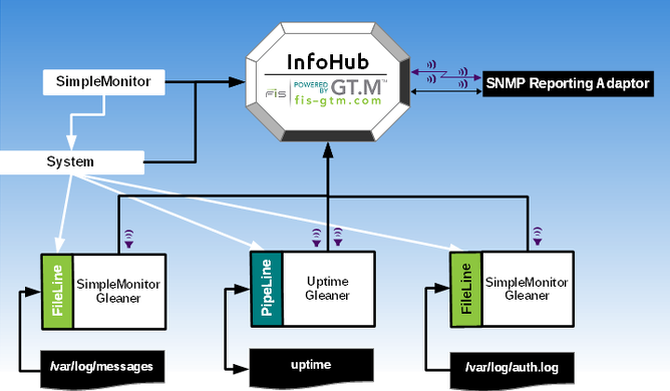

The Uptime and Log File Monitoring (ULFM) Reference Implementation monitors:
uptime: captures days up and load averages after every 15 seconds from/usr/bin/uptimeoutput. It generates two notificationsa??when up days is less than 30 days and when the 15 minutes load average is less than 1. Note that the notification for up days is generated only once per day because up days gets updated only once per day. The notification criteria were chosen specifically so that they generate alerts.System log (
/var/log/messages): automatically generates a notification when it detect a GT.M error in the system log.Authentication log (
/var/log/auth.log): automatically generates a notification when it detects a login failure in the authentication log.
The following table contains information about all files that are a part of the ULFM Reference Implementation. You can view these files from the configs subdirectory of your InfoHub distribution where they reside or download them from the links in the table. You can also click to download all files of the ULFM Reference Implementation together or open directly from http://tinco.pair.com/bhaskar/gtm/applications/infohub/ULFM_RI.zip.
Component | Name | Description | Download |
|---|---|---|---|
InfoHub Main Configuration File |
| The InfoHub configuration file used to configure the ULFM Reference Implementation. For uptime, it defines InfoDict Items |
|
FileLine Gleaner |
| A simple FileLine gleaner program that reads every line of the /var/log/messages and /var/log/auth.log and returns value in the form of 9999:line_read_value. Note that 9999 is the InfoDict Id for |
|
PipeLine Gleaner |
| A simple PipeLine gleaner program for the |
|

To install the ULFM Reference Implementation, perform the following steps:
Install InfoHub and create an InfoHub database. For more information, refer to Installing InfoHub.
From the samples directory copy SimpleMonitor.conf to the configs directory.
Execute the following command to load the SimpleMonitor.conf configuration file and start InfoHub.
$ $gtm_dist/mumps -run InfoHub --action=configure --file=$ihsrcdir/configs/SimpleMonitor.conf
$ $gtm_dist/mumps -run InfoHub --action=start
For more information, refer to Loading a Configuration File and Starting an InfoHub.
Install the FIS GT.M SNMP Plugin. For installation instructions and prerequisites, refer to Installing the SNMP Plugin.
Execute the following command to start the SNMP Plugin using Subscriber Id 404. Note that the SNMP Subscriber Descriptor (entry starting with
Subscriber:) in SimpleMonitor.conf specifies 404 as the Subscriber Id foruptimenotifications and 503 as Subscriber Id for log file notifications.$ $gtm_dist/mumps -run IHsnmp --action=start --plugin=404
For more information, refer to Starting the SNMP Plugin.
Execute the following commands to check the status of InfoHub and the SNMP Plugin:
$ $gtm_dist/mumps -run InfoHub --action=status
$ $gtm_dist/mumps -run IHsnmp --action=status --plugin=404
For more information, refer to Monitoring an InfoHub and Monitoring the SNMP Plugin.
Congratulations! Your ULFM Reference Implementation is now installed .
The following illustration shows how the ULFM Reference Implementation sets up an InfoHub framework for monitoring.
